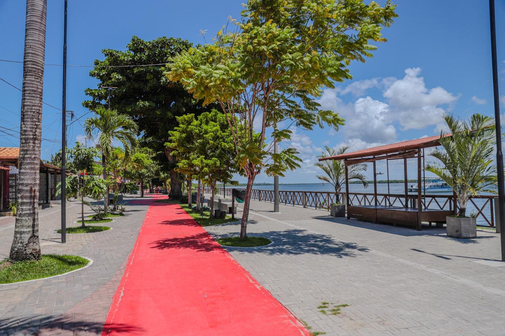

Cabedelo
Conheça a cultura do litoral paraibano
Local de patrimônio historico

A Fortaleza de Santa Catarina, localizada em Cabedelo, Paraíba, é uma construção histórica do século XVI, erguida pelos portugueses para proteger a entrada do Rio Paraíba e a então capital, Filipéia de Nossa Senhora das Neves (atual João Pessoa). Testemunha de importantes eventos da história colonial brasileira, resistiu a invasões e passou por diversas reformas ao longo dos séculos. Hoje, é um importante patrimônio histórico e turístico, oferecendo aos visitantes um mergulho no passado e belas vistas da região.
Praia do jacaré
Às margens do Rio Paraíba, o parque proporciona um cenário encantador para apreciar o sol se despedir no horizonte. O momento se torna ainda mais especial com a apresentação diária do "Bolero de Ravel" tocado ao vivo pelo saxofonista Jurandy do Sax em uma embarcação, seguido pela emocionante "Ave Maria". Recentemente revitalizado, o parque conta com infraestrutura renovada, incluindo um calçadão moderno, ciclovia, áreas de lazer e espaços para contemplação, tornando a visita ainda mais agradável e segura. É um lugar onde a beleza natural se encontra com a cultura local, criando memórias inesquecíveis
O pôr do sol do Jacaré é um espetáculo que encanta os visitantes com sua beleza única. A combinação do sol se pondo no horizonte, refletindo suas cores vibrantes nas águas do rio, cria uma atmosfera mágica. É um momento perfeito para relaxar e apreciar a natureza em sua plenitude.
Dique de Cabedelo

O Dique de Cabedelo oferece um espetáculo natural com o encontro do rio Paraíba e o Oceano Atlântico. É um local tranquilo com brisa agradável, ideal para relaxar e apreciar o pôr do sol. Recentemente revitalizado, oferece infraestrutura para visitantes e moradores, sendo um ponto turístico extremamente atrativo.
Litoral fascinante

.jpg)


Meet the VIPs (Very Important Pinnipeds)! We've got the harbor seal, the grey seal, the elephant seal (yep, the one with the hilarious schnoz), and the fierce leopard seal. It's like a star-studded cast of the ocean! Each has their own quirks and skills, making them the true icons of the underwater red carpet.
Cool Facts About Seals

Dive into the world of seals, those charming sea creatures with a flair for the extraordinary. From holding their breath like underwater champs to using their whiskers for underwater GPS, these marine wonders are quite the showstoppers.
Seals rock the art of breath-holding, making any professional diver green with envy. And those whiskers? They're like nature's very own GPS, guiding these underwater explorers through their aquatic escapades.
For a deeper dive into seal awesomeness, visit sealworld.com